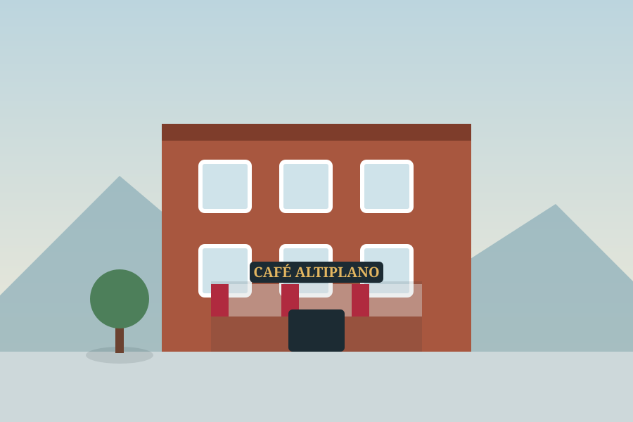
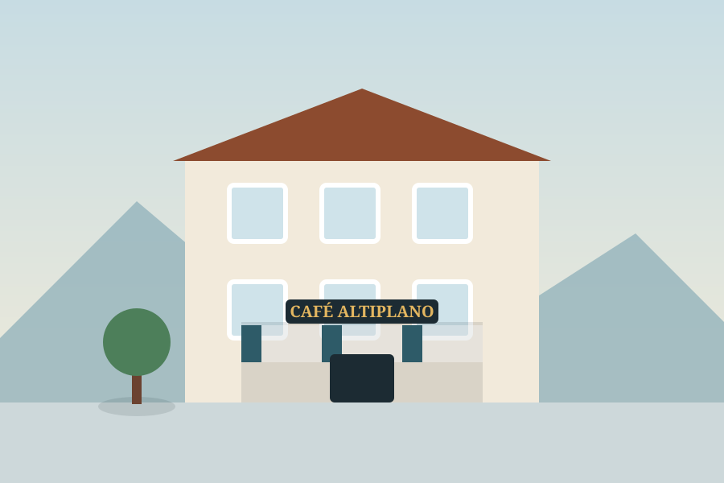
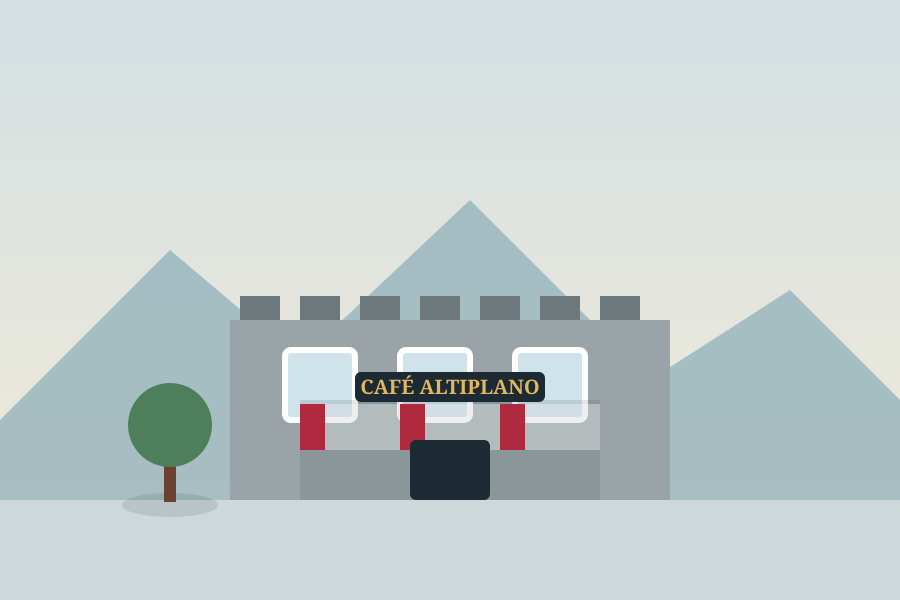

Chapinero, Bogotá
- Dirección
- Calle 63 n.º 10-20, local 2
- Teléfono
- +57 601 555 0142
- Horario
- Lunes a viernes de 7:00 a. m. a 8:00 p. m.; sábados y domingos de 8:00 a. m. a 9:00 p. m.
- Servicios
- Wifi, terraza y café para llevar.

Tunja Centro
- Dirección
- Carrera 10 n.º 19-35
- Teléfono
- +57 608 555 0177
- Horario
- Lunes a sábado de 7:30 a. m. a 7:30 p. m.; domingos de 9:00 a. m. a 6:00 p. m.
- Servicios
- Sala de lectura y parqueadero cercano.

La Tostadora, Zipaquirá
- Dirección
- Calle 4 n.º 7-12
- Teléfono
- +57 601 555 0193
- Horario
- Todos los días de 8:00 a. m. a 6:00 p. m.
- Servicios
- Catas guiadas los sábados y tienda de grano.